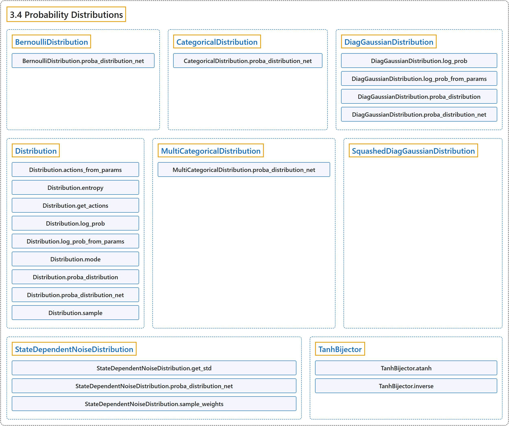

3.4 Probability Distributions
Classification

Glossary
| Term | Definition | 中文翻译 | Source |
|---|---|---|---|
| 3.4 Probability Distributions 概率分布 |
"Probability distributions used for the different action spaces:" | 用于不同动作空间的概率分布： | Raffin et al., n.d., "Probability Distributions", para. 1 |
| BernoulliDistribution BernoulliDistribution 伯努利分布 |
"Bernoulli distribution for MultiBinary action spaces." | 用于 MultiBinary 动作空间的伯努利分布。 | Raffin et al., n.d., "Probability Distributions", para. 1 |
| BernoulliDistribution.proba_distribution_net proba_distribution_net 方法 |
"Create the layer that represents the distribution: it will be the logits of the Bernoulli distribution." | 创建表示该分布的层：它将是伯努利分布的 logits。 | Raffin et al., n.d., "Probability Distributions", para. 1 |
| CategoricalDistribution CategoricalDistribution 类别分布 |
"Categorical distribution for discrete actions." | 用于离散动作的类别分布。 | Raffin et al., n.d., "Probability Distributions", para. 1 |
| CategoricalDistribution.proba_distribution_net proba_distribution_net 方法 |
"Create the layer that represents the distribution: it will be the logits of the Categorical distribution." | 创建表示该分布的层：它将是类别分布的 logits。 | Raffin et al., n.d., "Probability Distributions", para. 1 |
| DiagGaussianDistribution DiagGaussianDistribution 对角高斯分布 |
"Gaussian distribution with diagonal covariance matrix, for continuous actions." | 具有对角协方差矩阵的高斯分布，用于连续动作。 | Raffin et al., n.d., "Probability Distributions", para. 1 |
| DiagGaussianDistribution.log_prob log_prob 方法 |
"Get the log probabilities of actions according to the distribution." | 按该分布得到动作的对数概率。 | Raffin et al., n.d., "Probability Distributions", para. 1 |
| DiagGaussianDistribution.log_prob_from_params log_prob_from_params 方法 |
"Compute the log probability of taking an action given the distribution parameters." | 在给定分布参数的情况下，计算采取某个动作的对数概率。 | Raffin et al., n.d., "Probability Distributions", para. 1 |
| DiagGaussianDistribution.proba_distribution proba_distribution 方法 |
"Create the distribution given its parameters (mean, std)" | 根据参数（均值、标准差）创建分布 | Raffin et al., n.d., "Probability Distributions", para. 1 |
| DiagGaussianDistribution.proba_distribution_net proba_distribution_net 方法 |
"Create the layers and parameter that represent the distribution: one output will be the mean of the Gaussian, the other parameter will be the standard deviation (log std in fact to allow negative values)" | 创建表示该分布的层和参数：一个输出将是高斯分布的均值，另一个参数将是标准差（实际上是 log std，以允许负值） | Raffin et al., n.d., "Probability Distributions", para. 1 |
| Distribution Distribution 分布基类 |
"Abstract base class for distributions." | 分布的抽象基类。 | Raffin et al., n.d., "Probability Distributions", para. 1 |
| Distribution.actions_from_params actions_from_params 方法 |
"Returns samples from the probability distribution given its parameters." | 在给定参数的情况下，从概率分布返回样本。 | Raffin et al., n.d., "Probability Distributions", para. 1 |
| Distribution.entropy entropy 方法 |
"Returns Shannon’s entropy of the probability" | 返回该概率的香农熵 | Raffin et al., n.d., "Probability Distributions", para. 1 |
| Distribution.get_actions get_actions 方法 |
"Return actions according to the probability distribution." | 按概率分布返回动作。 | Raffin et al., n.d., "Probability Distributions", para. 1 |
| Distribution.log_prob log_prob 方法 |
"Returns the log likelihood" | 返回对数似然 | Raffin et al., n.d., "Probability Distributions", para. 1 |
| Distribution.log_prob_from_params log_prob_from_params 方法 |
"Returns samples and the associated log probabilities from the probability distribution given its parameters." | 在给定参数的情况下，从概率分布返回样本及其对数概率。 | Raffin et al., n.d., "Probability Distributions", para. 1 |
| Distribution.mode mode 方法 |
"Returns the most likely action (deterministic output) from the probability distribution" | 从概率分布返回最可能的动作（确定性输出） | Raffin et al., n.d., "Probability Distributions", para. 1 |
| Distribution.proba_distribution proba_distribution 方法 |
"Set parameters of the distribution." | 设置分布的参数。 | Raffin et al., n.d., "Probability Distributions", para. 1 |
| Distribution.proba_distribution_net proba_distribution_net 方法 |
"Create the layers and parameters that represent the distribution." | 创建表示该分布的层和参数。 | Raffin et al., n.d., "Probability Distributions", para. 1 |
| Distribution.sample sample 方法 |
"Returns a sample from the probability distribution" | 从概率分布返回一个样本 | Raffin et al., n.d., "Probability Distributions", para. 1 |
| MultiCategoricalDistribution MultiCategoricalDistribution 多类别分布 |
"MultiCategorical distribution for multi discrete actions." | 用于多离散动作的多类别分布。 | Raffin et al., n.d., "Probability Distributions", para. 1 |
| MultiCategoricalDistribution.proba_distribution_net proba_distribution_net 方法 |
"Create the layer that represents the distribution: it will be the logits (flattened) of the MultiCategorical distribution." | 创建表示该分布的层：它将是多类别分布的（展平的）logits。 | Raffin et al., n.d., "Probability Distributions", para. 1 |
| SquashedDiagGaussianDistribution SquashedDiagGaussianDistribution 压缩对角高斯分布 |
"Gaussian distribution with diagonal covariance matrix, followed by a squashing function (tanh) to ensure bounds." | 具有对角协方差矩阵的高斯分布，后接一个压缩函数（tanh）以确保边界。 | Raffin et al., n.d., "Probability Distributions", para. 1 |
| StateDependentNoiseDistribution StateDependentNoiseDistribution 状态相关噪声分布 |
"Distribution class for using generalized State Dependent Exploration (gSDE)." | 用于广义状态相关探索（gSDE）的分布类。 | Raffin et al., n.d., "Probability Distributions", para. 1 |
| StateDependentNoiseDistribution.get_std get_std 方法 |
"Get the standard deviation from the learned parameter (log of it by default)." | 从学到的参数得到标准差（默认是其对数）。 | Raffin et al., n.d., "Probability Distributions", para. 1 |
| StateDependentNoiseDistribution.proba_distribution_net proba_distribution_net 方法 |
"Create the layers and parameter that represent the distribution: one output will be the deterministic action, the other parameter will be the standard deviation of the distribution that control the weights of the noise matrix." | 创建表示该分布的层和参数：一个输出将是确定性动作，另一个参数将是控制噪声矩阵权重的分布的标准差。 | Raffin et al., n.d., "Probability Distributions", para. 1 |
| StateDependentNoiseDistribution.sample_weights sample_weights 方法 |
"Sample weights for the noise exploration matrix, using a centered Gaussian distribution." | 使用中心化的高斯分布，为噪声探索矩阵采样权重。 | Raffin et al., n.d., "Probability Distributions", para. 1 |
| TanhBijector TanhBijector Tanh 双射 |
"Bijective transformation of a probability distribution using a squashing function (tanh)" | 使用压缩函数（tanh）对概率分布做的双射变换 | Raffin et al., n.d., "Probability Distributions", para. 1 |
| TanhBijector.atanh atanh 方法 |
"Inverse of Tanh" | Tanh 的反函数 | Raffin et al., n.d., "Probability Distributions", para. 1 |
| TanhBijector.inverse inverse 方法 |
"Inverse tanh." | 反 tanh。 | Raffin et al., n.d., "Probability Distributions", para. 1 |
References
Raffin, A., Hill, A., Gleave, A., Kanervisto, A., Ernestus, M., & Dormann, N.. (n.d.). Probability Distributions. Stable-Baselines3 docs (Version 2.9.2a0). Retrieved October 31, 2026, from https://stable-baselines3.readthedocs.io/en/master/common/distributions.html